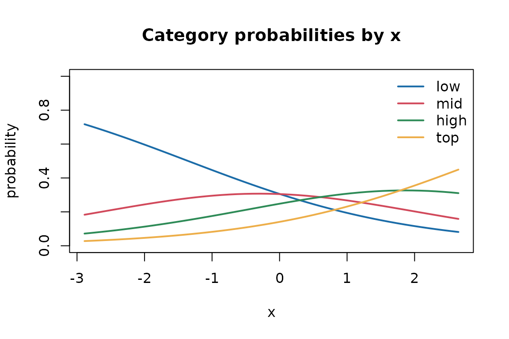

library(regcompR)
#>
#> Attaching package: 'regcompR'
#> The following object is masked from 'package:base':
#>
#> capabilities
families("ordinal")
#> [1] "adjacent_category_logit" "continuation_ratio_cloglog"
#> [3] "continuation_ratio_logit" "continuation_ratio_probit"
#> [5] "cumulative_cauchit" "cumulative_cloglog"
#> [7] "cumulative_logit" "cumulative_loglog"
#> [9] "cumulative_probit" "stereotype"Cumulative link models
An ordered factor response with a cumulative family gives the proportional odds model (logit), the ordered probit, and the cloglog, loglog and cauchit variants. The thresholds are estimated on their natural scale; the main formula has no intercept.
n <- 400
d <- data.frame(x = rnorm(n), z = rnorm(n))
d$g <- factor(rep(1:40, each = 10))
d$y <- cut(0.8 * d$x - 0.5 * d$z + rnorm(40, 0, 0.7)[d$g] + rlogis(n), c(-Inf, -1, 0.5, 2, Inf),
labels = c("low", "mid", "high", "top"), ordered_result = TRUE)
fit <- regcomp(y ~ x + z, family = "cumulative_logit", data = d)
summary(fit)
#> <regcomp_fit> Cumulative logit (ordinal) regression, engine 'ml' (frequentist)
#> mu (identity link): ~x + z
#> log likelihood -516.412 on 5 parameters, n = 400
#>
#> Wald estimates with 95% confidence intervals:
#> estimate std_error lower upper z p_value
#> mu:x 0.6056 0.0998 0.4099 0.8013 6.0653 0
#> mu:z -0.3720 0.0863 -0.5412 -0.2028 -4.3091 0
#> cuts:low|mid -0.7929 0.1116 -1.0116 -0.5743 -7.1064 0
#> cuts:mid|high 0.4777 0.1074 0.2671 0.6883 4.4460 0
#> cuts:high|top 1.8334 0.1444 1.5505 2.1164 12.7003 0
#> max |gradient| 1.63e-04; Hessian positive definiteThe estimates and standard errors equal those of
MASS::polr(). A formula for scale gives the
location scale model of ordinal::clm():
fit_ls <- regcomp(y ~ x + z, scale ~ x, family = "cumulative_logit", data = d)
AIC(fit, fit_ls)
#> df AIC
#> fit 5 1042.824
#> fit_ls 6 1043.989Category probabilities:
predict(fit, data.frame(x = c(-1, 0, 1), z = 0), type = "probability")
#> probability(low) probability(mid) probability(high) probability(top)
#> [1,] 0.4532963 0.2938149 0.1726431 0.0802457
#> [2,] 0.3115365 0.3056633 0.2449699 0.1378303
#> [3,] 0.1980494 0.2700178 0.3053738 0.2265590
plot(fit, which = "effects", variable = "x")
Continuation ratio (continuation_ratio_logit,
_probit, _cloglog), adjacent category
(adjacent_category_logit) and stereotype models are also
available, and random effects work as for any other family:
Nominal responses
multinomial_logit fits the baseline category logit model
of nnet::multinom(); the main formula is shared by every
non-baseline category.